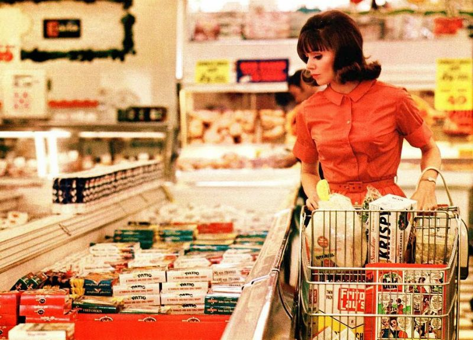

Danmark mod madspild
Madspild er den uønskede og unødvendige tab af fødevarer,
som opstår på forskellige stadier af fødevareproduktion, -distribution og -forbrug. Det kan ske på forskellige måder,
såsom overskud af fødevarer, der ikke sælges i butikker, eller overskydende mad, der går til spilde i restauranter eller i husholdninger.
Madspild kan også opstå på grund af dårlig håndtering og opbevaring af fødevarer, hvor de bliver ødelagt eller fordærvet, før de kan blive spist. Derudover kan madspild også skyldes en overproduktion af fødevarer, som ofte sker for at undgå tomme hylder i supermarkeder eller for at sikre, at der er nok mad til at imødekomme efterspørgslen.
Madspild er et stort problem for både økonomien og miljøet. Det skaber ikke kun spild af ressourcer, men det bidrager også til den globale opvarmning ved at producere drivhusgasser under produktionen og transporten af fødevarer. Derudover kan det have alvorlige konsekvenser for fødevaresikkerheden, da det begrænser adgangen til mad for dem, der er i nød.